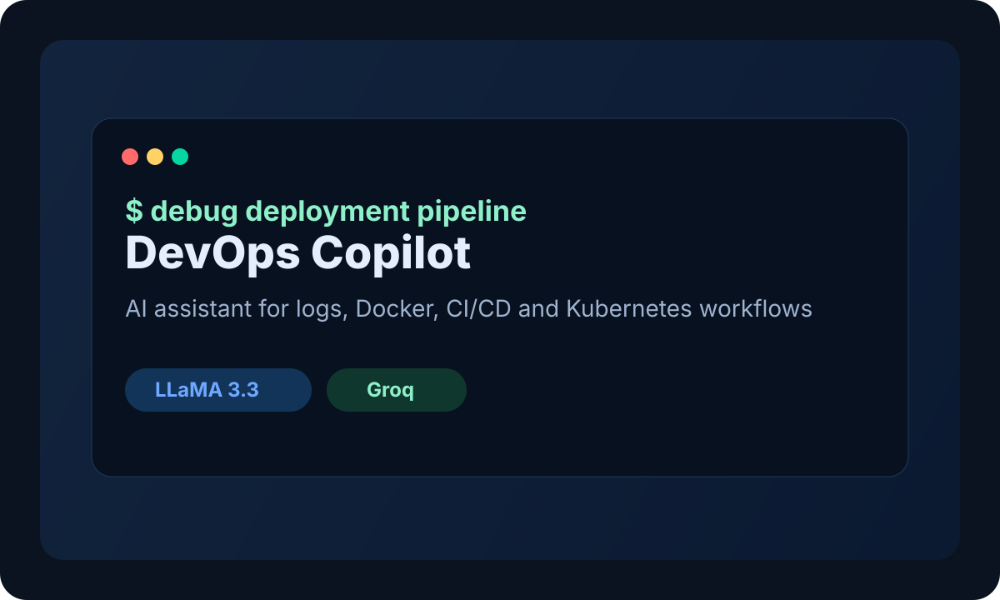

Featured

DevOps Copilot
AI-powered DevOps assistant that debugs logs, generates Dockerfiles, writes GitHub Actions YAML, and explains infrastructure issues through a terminal-style chat experience.
Python · Flask · Groq · LLaMA 3.3 · HTML · CSS · JavaScript